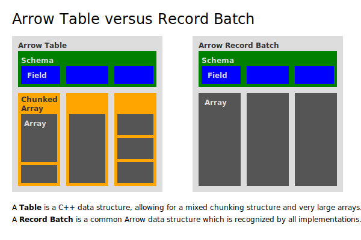

Glossary#
- array#
- vector#
A contiguous, one-dimensional sequence of values with known length where all values have the same type. An array consists of zero or more buffers, a non-negative length, and a data type. The buffers of an array are laid out according to the data type as defined by the columnar format.
Arrays are contiguous in the sense that iterating the values of an array will iterate through a single set of buffers, even though an array may consist of multiple disjoint buffers, or may consist of child arrays that themselves span multiple buffers.
Arrays are one-dimensional in that they are a sequence of slots or singular values, even though for some data types (like structs or unions), a slot may represent multiple values.
Defined by the Arrow Columnar Format.
- buffer#
A contiguous region of memory with a given length. Buffers are used to store data for arrays.
Buffers may be in CPU memory, memory-mapped from a file, in device (e.g. GPU) memory, etc., though not all Arrow implementations support all of these possibilities.
- canonical extension type#
An extension type that has been standardized by the Arrow community so as to improve interoperability between implementations.
See also
- child array#
- parent array#
In an array of a nested type, the parent array corresponds to the parent type and the child array(s) correspond to the child type(s). For example, a
List[Int32]-type parent array has anInt32-type child array.- child type#
- parent type#
In a nested type, the nested type is the parent type, and the child type(s) are its parameters. For example, in
List[Int32],Listis the parent type andInt32is the child type.- chunked array#
A discontiguous, one-dimensional sequence of values with known length where all values have the same type. Consists of zero or more arrays, the “chunks”.
Chunked arrays are discontiguous in the sense that iterating the values of a chunked array may require iterating through different buffers for different indices.
Not part of the columnar format; this term is specific to certain language implementations of Arrow (primarily C++ and its bindings).
See also
- complex type#
- nested type#
A data type whose structure depends on one or more other child data types. For instance,
Listis a nested type that has one child.Two nested types are equal if and only if their child types are also equal.
- data type#
- type#
A type that a value can take, such as
Int8orList[Utf8]. The type of an array determines how its values are laid out in memory according to Arrow Columnar Format.See also
- dictionary#
An array of values that accompany a dictionary-encoded array.
- dictionary-encoding#
An array that stores its values as indices into a dictionary array instead of storing the values directly.
See also
- extension type#
- storage type#
An extension type is an user-defined data type that adds additional semantics to an existing data type. This allows implementations that do not support a particular extension type to still handle the underlying data type (the “storage type”).
For example, a UUID can be represented as a 16-byte fixed-size binary type.
See also
- field#
A column in a schema. Consists of a field name, a data type, a flag indicating whether the field is nullable or not, and optional key-value metadata.
- IPC file format#
- file format#
- random-access format#
An extension of the IPC streaming format that can be used to serialize Arrow data to disk, then read it back with random access to individual record batches.
- IPC format#
A specification for how to serialize Arrow data, so it can be sent between processes/machines, or persisted on disk.
See also
- IPC message#
- message#
The IPC representation of a particular in-memory structure, like a record batch or schema. Will always be one of the members of
MessageHeaderin the Flatbuffers protocol file.- IPC streaming format#
- streaming format#
A protocol for streaming Arrow data or for serializing data to a file, consisting of a stream of IPC messages.
- physical layout#
A specification for how to arrange values in memory.
See also
- primitive type#
A data type that does not have any child types.
See also
- record batch#
In the :ref:`IPC format <format-ipc>`: the primitive unit of data. A record batch consists of an ordered list of buffers corresponding to a schema.
In some implementations (primarily C++ and its bindings): a contiguous, two-dimensional chunk of data. A record batch consists of an ordered collection of arrays of the same length.
Like arrays, record batches are contiguous in the sense that iterating the rows of a record batch will iterate through a single set of buffers.
- schema#
A collection of fields with optional metadata that determines all the data types of an object like a record batch or table.
- slot#
A single logical value within an array, i.e. a “row”.
- table#
A discontiguous, two-dimensional chunk of data consisting of an ordered collection of chunked arrays. All chunked arrays have the same length, but may have different types. Different columns may be chunked differently.
Like chunked arrays, tables are discontiguous in the sense that iterating the rows of a table may require iterating through different buffers for different indices.
Not part of the columnar format; this term is specific to certain language implementations of Arrow (for example C++ and its bindings, and Go).
See also